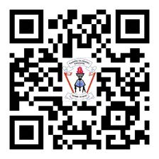

Introduction
The Science textbook has been prepared in line with the 2023 Science Syllabus for Primary Schools Standard III–VI issued by the Ministry of Education, Science and Technology.Some content in this book has been taken from the earlier books for Science and Technology for Standards Three, Four and Five published in 2018 and Standard Seven published in 2021, in accordance with the curriculum and syllabus of 2016.
This textbook has six chapters namely: Health principles, Diseases, Matter, Combustion, Energy and Computer coding.The content in this book has been presented through text, activities, experiments, exercises and illustrations.This has been done to enable you develop the required competencies from each chapter.Each chapter has exercises to enable you assess your understanding of the respective content.Thus, you are required to do all activities, experiments, questions and exercises.Moreover, consult your teachers, parents or guardians when searching for information from the library, internet and other sources.
Additional learning resources are available in TIE e-Library at https://ol.tie.go.tz or ol.tie.go.tz

Tanzania Institute of Education